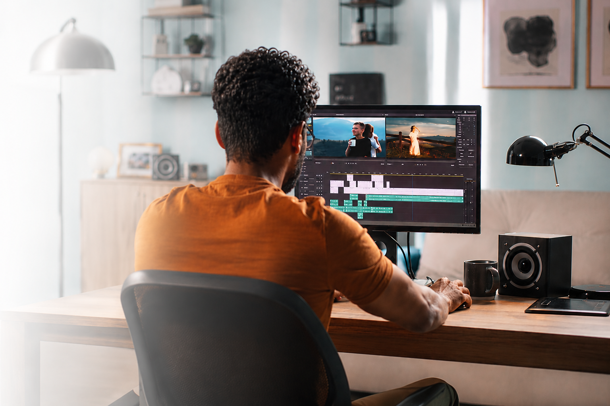

ALL FEATURES
クリエイティビティを加速させる、高度なAIツールと直感的な操作性。
限界を超えた表現を、あなたの手の中に。
スマホがそのまま、
プロの編集スタジオに。
PC版と同等の強力なAIツール群を、スマートフォンで。
複雑なカット割りやカラー調整など、プロレベルの機能が完結。
移動中のスキマ時間が、本格的な制作時間に変わります。

面倒なルーチン作業は、
すべてAIにおまかせ。
映像制作で最も時間のかかる単調な作業を、AIが肩代わり。
無音カットや字幕生成、背景の削除をワンタップで完了。
あなたは「ストーリーを創る」ことだけに集中できます。

欲しい映像素材は、
「言葉」で創り出す。
「夕暮れの空撮」など、足りない素材は言葉で指示するだけ。
最新のAIが、著作権フリーの高画質映像を数秒で生成。
素材探しの無駄をゼロにし、即座に動画へ組み込めます。

憧れの映画の質感を、
一瞬で自分のものに。
好きな映画や写真の色味をAIがディープラーニングで解析。
あなたの動画にその「空気感」を瞬時にコピー＆ペースト。
専門知識不要で、一気にプロのトーンを実現します。

置いたまま撮った映像が、
ドローン撮影のように。
固定カメラで撮影した平面映像を、AIが3D空間として認識。
「ゆっくりズーム」など、後から自由なカメラワークを追加。
単調な映像に、ダイナミックで立体的な動きを与えます。

映像の展開に合わせて、
音楽を自動で生成。
映像の盛り上がりをAIが読み取り、BGMを自動でリミックス。
動画の長さに合わせて、曲の構成や尺を秒単位で自動調整。
著作権を気にせず、完璧なタイミングの音演出が可能です。

迷わず、直感的に。
誰にでも優しい設計。
必要なツールが、必要な時に自然に現れるスマートなUI。
初心者からプロまで、迷うことなく表現に集中できる環境。
説明書なしで、インストール後すぐに制作を開始できます。

指先の感覚で、
思い通りに切り抜く。
クリップの結合や分割も、マグネットのように吸い付く操作感。
AIが「良い場面」を提案し、不要な部分を瞬時にカット。
精密な加工が、これまでにないほどスムーズに行えます。

高画質な映像も、
吸い付くような速さで。
独自開発のエンジンが、デバイスの性能を極限まで解放。
4K動画や多数のレイヤー合成も、止まることなく滑らかに。
すべての操作が、ストレスなく瞬時に反映されます。
